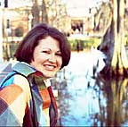
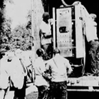
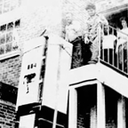
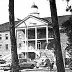
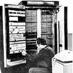

Loading
Location
University of Southwestern Louisiana, Lafayette, LA
Now (2003) known as the University of Louisiana at Lafayette.
First Installed
1975
Configuration
3 L68 CPUs, 12 MSU0451, 4 MSU0501

Pat Lyon at USL, 1976
The Sale
Jim Hildebrand, Pat Lyon, Larry Merritt
Site Analysts
Warren Johnson, James Dugal, Steve Landry
System Administrators
Bill Haga, Bill Watt, and Ken Byrd.
Comp Center Administrators
Della Bonnette, director.
Student Users
Peter Bahrs, Rose Carinhas, Stan Chesnutt, Ken Clement, Matt Delcambre, Brian Doré, Bryan Durio, Edmund Gallizzi, Ken Horton, Randall Jouett, Craig Martin, Sammy Migues, Lane Robert, Paul Rogers, Robert Sonnier, Johnnie Stafford, Jim Stephens, Bill Tims, Mary Tims, Scott Sheppard, Julie Jackson
Notable developments
Application areas
One of the main selling points for Multics was that both university administration and student computing took place on the same machine.
When IBM PCs became available, there was a project at USL funded by NASA to
see how to distribute function between PCs and Multics.
See  THE USL NASA PC R&D PROJECT: GENERAL SPECIFICATIONS OF OBJECTIVES, Computer Science Department, University of Southwestern Louisiana, 1984,
THE USL NASA PC R&D PROJECT: GENERAL SPECIFICATIONS OF OBJECTIVES, Computer Science Department, University of Southwestern Louisiana, 1984,
and  THE USL NASA PC R&D DEVELOPMENT ENVIRONMENT STANDARDS, Computer Science Department, University of Southwestern Louisiana, 1984,
THE USL NASA PC R&D DEVELOPMENT ENVIRONMENT STANDARDS, Computer Science Department, University of Southwestern Louisiana, 1984,
and  A PERFORMANCE EVALUATION OF THE IBM 370/XT PERSONAL COMPUTER, Computer Science Department, University of Southwestern Louisiana, 1984.
A PERFORMANCE EVALUATION OF THE IBM 370/XT PERSONAL COMPUTER, Computer Science Department, University of Southwestern Louisiana, 1984.
An application called Dataflow Simulation System (DFSS)
was written at USL and used to analyze software fault tolerance (SIFT) coded in Pascal in the 1980s.
The Multics version was written in PL/I.
It is described in  A UNIFIED DATA FLOW MODEL FOR FAULT TOLERANT COMPUTERS: Final Report, Computer Science Department, University of Southwestern Louisiana, 1984.
A UNIFIED DATA FLOW MODEL FOR FAULT TOLERANT COMPUTERS: Final Report, Computer Science Department, University of Southwestern Louisiana, 1984.
 Concepts and implementations of natural language query systems, Computer Science Department, University of Southwestern Louisiana, 1984 was an application of
Dominick's MADAM (Multics Approach to Data Access and Management) system
Concepts and implementations of natural language query systems, Computer Science Department, University of Southwestern Louisiana, 1984 was an application of
Dominick's MADAM (Multics Approach to Data Access and Management) system
 MADAM: Multics Approach to Data Access and Management Users Guide, Computer Science Department, University of Southwestern Louisiana, 1977, Technical Report CMPS-77-6-1.
MADAM: Multics Approach to Data Access and Management Users Guide, Computer Science Department, University of Southwestern Louisiana, 1977, Technical Report CMPS-77-6-1.
Anecdotes
See the (untrue, but funny) Louisiana State Trooper Story.
USL was one of the first university Multics sales after MIT. USL had a swamp on campus with real alligators.
See Ron Riedesel's story about Installing USL.
[Bob May] Don Mengel and Bob May installed the Multics software after the physical installation was completed. I think we were there three days. Toward evening on the first day, our USL operator, I'll use "Joe," suggested we quit for the day and go get dinner. Of course, Don and I refused; we wanted to get as much done as we possibly could. Joe persisted and did persuade us to stop for dinner, agreeing that we would return to work after.
Joe was a very likable guy and was a great help in the installation. However, we never went back to work that evening. We went to a bar that Joe liked and the food, and beer, were great. The evening was a first for me in that the bar had the first computer game, PONG. We were having too much fun to go back to work!
After the installation was complete, Joe hosted a shrimp boil for us out in the bayou. All in all, it was a wonderful trip.
[Jim Stephens] Much work on the DN355 there, there were more terminals on that system than previous systems sold.
[Jim Stephens] I broke the Ring 1 security used for mail and caused a minor panic by using it to get into Ring 1 w/o authorization.
[Jim Stephens] I had a program that was stolen from the send_message command, called "send command". Once you did an "accept command" for some unknowing user, you could go to another terminal and do a "send command" to that user and have it executed w/o any indication to the user that you were doing it. The Star Trek game that was run locally had a log facility that I read, and if I were to have been a bad user, could have been used as an early "trojan" to do an "accept command" for any user, just by setting a trap for him / her. I do know that one of the Honeywell SA's saw the log and reamed some of the sys admin users for running the game on their SA accounts. Since I was an employee of the University, I did all this mischief as a "good" guy and never did any nasty stuff to anyone (not even cookie).
[Julie Jackson Sibert] I was assigned to the computer center for my work-study job and while there, I taught many Multics User classes to both faculty and students. I also developed several user guides.
Moving the Multics Machine
[David Barry, Lafayette Daily Advertiser, May 22nd, 1977 -- from Facebook, thanks to Jim Stephens] USL's computer is getting a new home, and the move across campus is a major undertaking. The $4.5 million Honeywell MULTICS system had been housed in Martin Hall, the USL administration building, since its installation in 1976. It is being reinstalled in Stephens Memorial Library, which will house both the computer and computer center staff offices, as well as the computer science faculty. The USL MULTICS is one of two such university computers in the nation, the other being at the Massachusetts Institute of Technology. About 30 large individual pieces were moved; these include 12 disc drives, eight memory units, two printers, an input-output multiplexor, the central processing unit, and tape drives. This constitutes eight moving van loads of equipment. Each load was planned so that the cargo would total to one-half million dollars or less in value, with one exception: the central processing unit. From the time the CPU was lifted by crane from the van, to the time it was safely hoisted to its second-story destination, no one breathed. The CPU costs $1.5 million dollars. When it was touched home, USL president Dr. Ray Authement quipped, "I'm going to church." The first floor of Stephens Memorial Library will contain the computer terminal room and computer science faculty offices. The second floor will house the computer center staff and the computer itself.

Moving the USL machine, 1977

Moving a memory unit, 1977
[Jim Stephens] Terry Walker who was the chairman of the CS department was the one responsible for getting the Multics there. I worked for him as a reporting employee, but also helped anyone in the department. I spent all my free time playing with and learning Multics while I worked there. Other professors I worked with were Ted G Lewis and Bruce Shriver.
[Jon Guidry] Jim, My high school computer science teacher brought us there in 1989 for a field trip - the Multics system was still there at that time. I remember seeing the reel to reel storage and the data center.
Final Shutdown of USL
1990
Honeywell Publicity
[Ron Riedesel] Here is a USL Site Profile (Honeywell marketing document) salvaged from the Great Garage Clean up of '03. This was a Honeywell promotional profile of the USL site, probably from 1976 or 1977.
(Click any image for a larger view)

Page 1 of the brochure. Front of Martin Hall, the campus administration building. The Comp Center building, Stephens Hall, was across the quadrangle behind Martin Hall.

Page 2 of the brochure. Honeywell 6180 CPU, doors open.
Page 3 of the brochure. Delta Data 400 terminals in student terminal room.
Information from Ron Riedesel, Bryan Durio, Jim Stephens, and Julie Sibert.